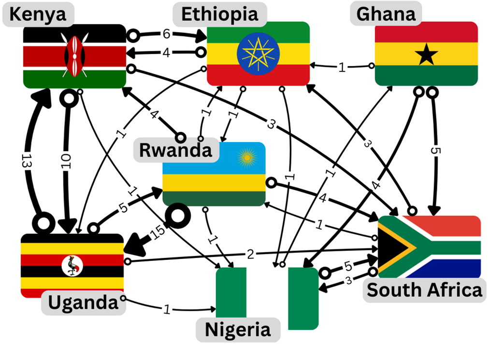

Note
Go to the end to download the full example code.
What you will learn
How important is a webpage on the internet? This was the question that Google founders Larry Page and Sergey Brin asked themselves when they were developing their search engine. In this lesson we will learn the maths behind the solution, now known as PageRank, which is the basis of the algorithm that powers Google search.
As Otema explains in the video below the PageRank algorithm is the additional ingredient that allows search engines to rank the most relevant pages first. The PageRank algorithm is based on the idea that a page is important if it is linked to other important pages. Although it was originally intended to rank web pages, the PageRank algorithm can be used to analyze any kind of network, for example, social connections, biological systems and transportation infrastructure to name a few.
The problem
In this lesson we will work with a small network built from Wikipedia pages of Ethiopia, Ghana, Kenya, Nigeria, Rwanda, South Africa and Uganda – chosen for being the home countries of the African members of the Kujenga team. These pages represent a tiny part of the internet but the principles we will learn can be applied to networks of any size. See the video below where Amy introduces our tiny internet.
We represent our network of Wikipedia pages as a directed graph where each node represents a country, shown as labeled country flags in the video. In order to construct the connections between nodes in the graph we check on each country’s page for links to the other 6 countries. For example, in the first paragraph of the page for Ethiopia we read:
Ethiopia, officially the Federal Democratic Republic of Ethiopia, is a landlocked country located in the Horn of Africa region of East Africa. It shares borders with Eritrea to the north, Djibouti to the northeast, Somalia to the east, Kenya to the south, South Sudan to the west, and Sudan to the northwest.
Here we see a link to Kenya, meaning we should count this as a connection from Ethiopia to Kenya. We represent this connection as a directed edge in the graph, shown by an arrow pointing from Ethiopia to Kenya. The weight of each edge, shown as a number next to the edge, counts the total number of links from page A to page B, in this case, there are a total of 4 links from from Ethiopia’s page to Kenya’s.
Note
Wikipedia is a dynamic website and the links between pages can change over time, the network we are using is a snapshot of the Wikipedia pages taken in November 2024. You may want to update this network or even add your home country if is not already included.
Food for Thought
As Amy mentions in the video, use your intuitive understanding of the problem to predict which countries’ pages you think will have a high (or low) ranking.
The methods
We have seen a graphical representation of a network in The problem but in order to use the PageRank algorithm we will need to represent the network mathematically as a matrix. In the following section, we will learn how to work with matrices as well as some basic concepts of linear algebra. The most useful concepts for understanding PageRank will be the notions of an eigenvector and eigenvalue of a matrix which we cover in `Defining a matrix`_.
How to use this material
This material is taught as part of a 6-hour learning session. Your Kujenga instructor will have booked a time for an in-person or online 2-hour session. This means you have two hours of work to do on either side of the in-person or online session. Here is what you should do:
Before coming to the class: You should read through this entire page. In the section on LINKNEEDED, try to solve the example both by hand and using Python. If you get stuck look here, but otherwise you should simply read through and try to understand what we are doing. Once you have read through, you should download this page as a Jupyter notebook or as Python code by clicking the links at the bottom of this page. You will need to have a Python environment set up on your computer or access via Google Colab (see here for info on how to set that up).
During class: Your teacher will start by going through the theory for LINKNEEDED. Please ask them questions and actively engage!
The Mathematics of the PageRank algorithm
The PageRank algorithm can be understood as modeling the behavior of a “random surfer” navigating the internet. This surfer either clicks on a link on the current page or occasionally gets bored and jumps to a completely random page. The PageRank score of a page represents the long-term probability that this random surfer will end up on that particular page.
Preliminaries
Let’s break down the process using some mathematical formulas.
The PageRank Vector (R)
This vector R represents the PageRank scores for all N=7 pages in the graph. Each element ri is the PageRank score of page i. Initially, these scores can be set equally, for example, ri = 1/N for all i.
The Transition Matrix (M)
This matrix M (often called the hyperlink matrix or transition matrix) encodes the link structure of the network.
Ljout is the total number of outgoing links from page j.
Mij represents the probability of transitioning from page j to page i by following some specific link.
If page j links to page i, the probability of following a specific link from j to i is 1/Ljout , assuming the surfer chooses randomly among all outgoing links.
If there is no link from j to i, then Mij = 0.
The Iterative Update Rule
This is the core formula for calculating PageRank iteratively.
R(t) is the PageRank vector at iteration t, and R(t+1) is the vector at the next iteration.
d is the “damping factor” (typically around 0.85). It represents the probability that the random surfer will continue following links (as opposed to jumping to a random page). In practice, this is important to handle “dangling nodes”, nodes with no outgoing links Ljout = 0.
MR(t) calculates how the existing PageRank scores R(t) are distributed across the network by following links. Element i of this resulting vector is the sum of PageRank contributions from all pages j that link to page i. dMR(t) is the portion of the PageRank score derived from surfers following links.
1-d is the probability that the surfer gets bored and jumps to a random page. (1-d)/N is the probability of landing on any specific page during a random jump (assuming N pages total). 1 is a column vector of size N containing all ones. (1-d)/N 1 represents the PageRank score distributed equally among all pages due to the random jump behavior. This term ensures that all pages receive some minimal rank and helps the algorithm converge. This is especially important for dealing with nodes with no outgoing links Ljout = 0, as mentioned earlier, or disconnected parts of the graph.
Convergence
The iterative update process is repeated until the PageRank vector R stabilizes. Convergence is reached when the difference between the PageRank vector in the current iteration R(t+1) and the previous iteration R(t) is very small (below some predefined threshold). The final vector R represents the stable probability distribution of the random surfer, indicating the relative importance of each page.
Simplified update rule for connected graphs
Looking at the graph representing our network of Wikipedia pages we can see that the graph is connected, a technical term meaning there is a path between every pair of distinct nodes ignoring the direction of the edges. It is clear that we do not need to take into account any “dangling nodes”, nodes with no outgoing links Ljout = 0, or disconnected parts of the graph.
Using this observation we can simplify the update rule by setting d = 1. This means that the random surfer will always follow a link and never jump to a random page. The update rule becomes:
Here we introduce a normalization factor \(\lambda\). This normalization ensures that all PageRank scores (element of the vector R) sum to a constant value.
Assuming the algorithm has converged, R(t + 1) = R(t), you might already recognize the resemblance to the eigenvalue equation:
If not don’t worry, we will cover the details in the section Eigenvalues and eigenvectors of a matrix.
In the video below Amy discusses the theory above and shows the results of applying the simplified update rule iteratively. You will see how to implement this yourself in the section ``_.
Food for Thought
It turned out that Nigeria had the highest PageRank and Kenya and Uganda the lowest. Did this match your expectations based on the network shown in section The problem.
Working with matrices in Python
NumPy (Numerical Python) is the fundamental package for scientific computing in Python. It provides a powerful N-dimensional array object and tools for working with these arrays. We’ll use NumPy arrays to represent vectors (1D arrays) and matrices (2D arrays).
Importing NumPy
NumPy is a third-party library, so you need to install it separately. If you are using Google Colab, it is already included. To load NumPy with the alias np, you can use the following command:
import numpy as np
Defining a vector (1D Arrays)
A vector can be thought of as a list of numbers. In NumPy, you create it using np.array() with a Python list:
my_list = [1, 2, 3]
my_vector = np.array(my_list)
print("My Vector:")
print(my_vector)
My Vector:
[1 2 3]
Check its shape (dimensions) Output: (3,) indicates a 1D array with 3 elements
print("Vector shape:", my_vector.shape)
Vector shape: (3,)
Creating Matrices (2D Arrays)
A matrix is like a grid of numbers (rows and columns). You create it using np.array() with a list of lists, where each inner list is a row:
my_lists = [[1, 2, 3], [4, 5, 6]]
my_matrix = np.array(my_lists)
print("\nMy Matrix:")
print(my_matrix)
My Matrix:
[[1 2 3]
[4 5 6]]
Check its shape (rows, columns) Output: (2, 3) indicates 2 rows and 3 columns
print("Matrix shape:", my_matrix.shape)
Matrix shape: (2, 3)
Create a square matrix (same number of rows and columns)
square_matrix = np.array([[9, 8], [7, 6]])
print("\nSquare Matrix:")
print(square_matrix)
print("Square Matrix shape:", square_matrix.shape)
Square Matrix:
[[9 8]
[7 6]]
Square Matrix shape: (2, 2)
Basic Operations
NumPy makes operating on vectors and matrices straightforward. Element-wise Operations: Standard arithmetic operators (+, -, *, /) often work element-by-element if the shapes are compatible.
vec1 = np.array([1, 2, 3])
vec2 = np.array([4, 5, 6])
mat1 = np.array([[1, 1], [2, 2]])
mat2 = np.array([[3, 3], [4, 4]])
Vector addition (element-wise)
print("\nVector Addition:", vec1 + vec2) # Output: [5 7 9]
Vector Addition: [5 7 9]
Matrix addition (element-wise)
print("Matrix Addition:\n", mat1 + mat2)
Matrix Addition:
[[4 4]
[6 6]]
Scalar multiplication (multiply every element by a number)
print("Scalar Multiplication (Vector):", 3 * vec1) # Output: [3 6 9]
print("Scalar Multiplication (Matrix):\n", 2 * mat1)
Scalar Multiplication (Vector): [3 6 9]
Scalar Multiplication (Matrix):
[[2 2]
[4 4]]
Dot Product / Matrix Multiplication: This is different from element-wise multiplication (*). It’s the standard mathematical operation. Use np.dot() or the @ operator.
vec1 = np.array([1, 2, 3])
vec2 = np.array([4, 5, 6])
Vector dot product (sum of element-wise products)
dot_product = np.dot(vec1, vec2) # 1*4 + 2*5 + 3*6 = 4 + 10 + 18 = 32
Or using the @ operator
dot_product_alt = vec1 @ vec2
print("\nVector Dot Product:", dot_product)
print("Vector Dot Product (@):", dot_product_alt)
mat1 = np.array([[1, 2], [3, 4]]) # 2x2 matrix
mat2 = np.array([[5, 6], [7, 8]]) # 2x2 matrix
vec3 = np.array([10, 20]) # 1x2 vector
Vector Dot Product: 32
Vector Dot Product (@): 32
Matrix multiplication
matrix_product = np.dot(mat1, mat2)
Or using the @ operator
matrix_product_alt = mat1 @ mat2
print("Matrix Multiplication:\n", matrix_product)
print("Matrix Multiplication (@):\n", matrix_product_alt)
Matrix Multiplication:
[[19 22]
[43 50]]
Matrix Multiplication (@):
[[19 22]
[43 50]]
Matrix-vector multiplication
mat_vec_product = np.dot(mat1, vec3) # Note: Treats vec3 as a column vector here
Or using the @ operator
mat_vec_product_alt = mat1 @ vec3
print("Matrix-Vector Multiplication:", mat_vec_product)
print("Matrix-Vector Multiplication (@):", mat_vec_product_alt)
Matrix-Vector Multiplication: [ 50 110]
Matrix-Vector Multiplication (@): [ 50 110]
Note
Simple multiplication \(*\) is element-wise, not matrix multiplication!
print("Element-wise Matrix Multiplication (NOT dot product):\n", mat1 * mat2)
Element-wise Matrix Multiplication (NOT dot product):
[[ 5 12]
[21 32]]
Rule for A @ B: The number of columns in A must equal the number of rows in B. Transpose: Swaps rows and columns. Use the .T attribute.
matrix = np.array([[1, 2, 3], [4, 5, 6]])
print("\nOriginal Matrix:\n", matrix)
print("Transposed Matrix:\n", matrix.T)
print("Original shape:", matrix.shape) # Output: (2, 3)
print("Transposed shape:", matrix.T.shape) # Output: (3, 2)
Original Matrix:
[[1 2 3]
[4 5 6]]
Transposed Matrix:
[[1 4]
[2 5]
[3 6]]
Original shape: (2, 3)
Transposed shape: (3, 2)
Accessing Elements
You can access elements using zero-based indexing, similar to Python lists. For matrices, use [row, column].
vector = np.array([10, 20, 30, 40])
matrix = np.array([[1, 2], [3, 4]])
Get the first element of the vector (index 0)
print("\nVector element [0]:", vector[0]) # Output: 10
Vector element [0]: 10
Get the element at row 1, column 0 of the matrix
print("Matrix element [1, 0]:", matrix[1, 0]) # Output: 3
Matrix element [1, 0]: 3
Get an entire row (e.g., row 0)
print("Matrix row [0]:", matrix[0]) # Output: [1 2]
Matrix row [0]: [1 2]
Get an entire column (e.g., column 1) using slicing ‘:’
print("Matrix column [:, 1]:", matrix[:, 1]) # Output: [2 4]
Matrix column [:, 1]: [2 4]
Constructing the transition matrix M
The transition matrix M, given in section Preliminaries, has elements
where Ljout is the total number of outgoing links from page j.
From the network shown in section The problem we can count up the number of outgoing links for each country and summarize them in a table.
Country |
Number of outgoing links |
|---|---|
ZA |
7 |
GH |
10 |
NG |
6 |
RW |
25 |
UG |
21 |
KE |
20 |
ET |
18 |
We can again use the network shown in section The problem to check if if there is a link from country j to country i. For example, we can see that there is a link from Ethiopia to Kenya but not from Ethiopia to South Africa. Combining these two pieces of information we can construct the transition matrix M as shown in the table below.
ZA |
GH |
NG |
RW |
UG |
KE |
ET |
|
|---|---|---|---|---|---|---|---|
ZA |
0 |
1/10 |
1/6 |
1/25 |
1/21 |
1/20 |
0 |
GH |
0 |
0 |
1/6 |
0 |
0 |
0 |
0 |
NG |
1/7 |
1/10 |
0 |
1/25 |
1/21 |
1/20 |
1/18 |
RW |
1/7 |
0 |
0 |
0 |
1/21 |
0 |
1/18 |
UG |
0 |
0 |
0 |
1/25 |
0 |
1/20 |
1/18 |
KE |
0 |
0 |
0 |
1/25 |
1/21 |
0 |
1/18 |
ET |
1/7 |
1/10 |
0 |
1/25 |
0 |
1/20 |
0 |
This table can be translated into Python code as a NumPy array:
M = np.array(
[
[0, 1 / 10, 1 / 6, 1 / 25, 1 / 21, 1 / 20, 0],
[0, 0, 1 / 6, 0, 0, 0, 0],
[1 / 7, 1 / 10, 0, 1 / 25, 1 / 21, 1 / 20, 1 / 18],
[1 / 7, 0, 0, 0, 1 / 21, 0, 1 / 18],
[0, 0, 0, 1 / 25, 0, 1 / 20, 1 / 18],
[0, 0, 0, 1 / 25, 1 / 21, 0, 1 / 18],
[1 / 7, 1 / 10, 0, 1 / 25, 0, 1 / 20, 0],
]
)
print(M)
[[0. 0.1 0.16666667 0.04 0.04761905 0.05
0. ]
[0. 0. 0.16666667 0. 0. 0.
0. ]
[0.14285714 0.1 0. 0.04 0.04761905 0.05
0.05555556]
[0.14285714 0. 0. 0. 0.04761905 0.
0.05555556]
[0. 0. 0. 0.04 0. 0.05
0.05555556]
[0. 0. 0. 0.04 0.04761905 0.
0.05555556]
[0.14285714 0.1 0. 0.04 0. 0.05
0. ]]
Food for Thought
If a new link between two pages were added or even a whole new page, how would with change the matrix M? Does such a change to M represent a large or small computational cost? Consider this in a real-world context where the number of pages (nodes in the network) could be extremely large.
Simulating PageRank
Let’s choose an initial PageRank vector R(0) and apply the update rule iteratively until convergence.
R = np.array([1, 1, 1, 1, 1, 1, 1]) * 100 / 7 # Initial PageRank vector
print("Initial PageRank vector R(0):", R)
Initial PageRank vector R(0): [14.28571429 14.28571429 14.28571429 14.28571429 14.28571429 14.28571429
14.28571429]
Create a variable t to keep track of the number of iterations performed
t = 0 # Iteration counter
print("Iteration:", t)
Iteration: 0
Create a vector with the county codes which will be used to label the PageRank vector
countries = ["ZA", "GH", "NG", "RW", "UG", "KE", "ET"]
print("Countries:", countries)
Countries: ['ZA', 'GH', 'NG', 'RW', 'UG', 'KE', 'ET']
Apply the update rule
R = np.dot(M, R) # Update PageRank vector using matrix multiplication
R = R / np.sum(R) * 100 # Normalize the PageRank vector to sum to 100
print(
f"Updated PageRank vector R({t+1}):\n",
"\n ".join([f"{c}: {r:.2f}" for c, r in zip(countries, R)]),
)
t += 1 # Increment iteration counter
Updated PageRank vector R(1):
ZA: 21.57
GH: 8.89
NG: 23.26
RW: 13.12
UG: 7.76
KE: 7.64
ET: 17.76
Run the cell above multiple times to see how the PageRank vector converges. If you want to start again be sure to rerun all the cells in the Simulating PageRank section to avoid unexpected behavior.
Food for Thought
If you run the cell above multiple times you will see that the PageRank vector converges to a stable value. How many iterations does it take to converge? Do you think this is a reasonable number of iterations for a real-world application? What happens if you choose a different initial PageRank vector? Does it converge to the same value?
Eigenvalues and eigenvectors of a matrix
In the video below Amandine and Amy give a brief introduction to eigenvalues and eigenvectors and how they are applied in the context of the PageRank algorithm.
Let’s summarize the mathematics shown in the video. The N-by-N matrix M has N eigenvectors math:mathbf{v}_i` which obey the equation:
\(\mathbf{M}\mathbf{v}_i = \lambda_i \mathbf{v}_i\) where math:lambda_i is the eigenvalue associated with the eigenvector math:mathbf{v}_i.
The eigenvalue equation states that when the matrix M acts on the eigenvector math:mathbf{v}_i, it scales the vector by a factor of math:lambda_i without changing its direction.
Let’s use Python to compute the eigenvalues and the corresponding eigenvectors of the transition matrix M. We will use the numpy.linalg.eig() function to compute the eigenvalues and eigenvectors of a matrix.
eigenValues, eigenVectors = np.linalg.eig(M)
print("Eigenvalues:", eigenValues)
Eigenvalues: [ 0.29255874+0.j -0.1132207 +0.0347069j -0.1132207 -0.0347069j
0.03257219+0.j -0.02452311+0.03602166j -0.02452311-0.03602166j
-0.0496433 +0.j ]
Note that some of the eigenvalues are complex, e.g. 0.02227925-0.04471056j.
Let’s get the index of the largest eigenvalue by first getting a list of the indices of the sorted eigenValues:
idx = eigenValues.argsort()[::-1] # Sort eigenValues in descending order
print(idx)
[0 3 4 5 6 1 2]
Now let’s replace the eigenValues and eigenVectors with the sorted versions
eigenValues = eigenValues[idx]
eigenVectors = eigenVectors[:, idx]
print("Sorted Eigenvalues:", eigenValues)
Sorted Eigenvalues: [ 0.29255874+0.j 0.03257219+0.j -0.02452311+0.03602166j
-0.02452311-0.03602166j -0.0496433 +0.j -0.1132207 +0.0347069j
-0.1132207 -0.0347069j ]
The largest eigenvalue is the first element of the sorted eigenValues array. The corresponding eigenvector is the first column of the sorted eigenVectors array.
largest_eigenvalue = eigenValues[0]
largest_eigenvector = eigenVectors[:, 0]
print("Largest Eigenvalue:", largest_eigenvalue)
print("Corresponding Eigenvector:", largest_eigenvector)
- <<<<<<< HEAD
Largest Eigenvalue: (0.2925587369323658+0j)
- Corresponding Eigenvector: [0.51030388+0.j 0.30519189+0.j 0.53571932+0.j 0.35611479+0.j
0.15671107+0.j 0.15562185+0.j 0.42878715+0.j]
Check that the eigenvalue equation holds
print("M @ largest_eigenvector:")
print(np.dot(M, largest_eigenvector))
print("largest_eigenvalue * largest_eigenvector:")
print(largest_eigenvalue * largest_eigenvector)
M @ largest_eigenvector:
[0.14929386+0.j 0.08928655+0.j 0.15672937+0.j 0.10418449+0.j
0.04584719+0.j 0.04552853+0.j 0.12544543+0.j]
largest_eigenvalue * largest_eigenvector:
[0.14929386+0.j 0.08928655+0.j 0.15672937+0.j 0.10418449+0.j
0.04584719+0.j 0.04552853+0.j 0.12544543+0.j]
In the final video Amandine will briefly take you through the computation of the eigenvalues and eigenvalues of the transition matrix M including how to sort them to extract the largest eigenvalue and its corresponding eigenvector.
Directly computing the PageRank scores
Does this help us predict the PageRank scores? Let’s normalize largest_eigenvector and check that the values correspond to the PageRank scores obtained using the iterative method applied in the section Simulating PageRank.
largest_eigenvector_normalized = largest_eigenvector / np.sum(largest_eigenvector) * 100
print(
f"Normalized largest eigenvector:\n",
"\n ".join(
[f"{c}: {r:.2f}" for c, r in zip(countries, largest_eigenvector_normalized)]
),
)
Normalized largest eigenvector:
ZA: 20.84+0.00j
GH: 12.46+0.00j
NG: 21.88+0.00j
RW: 14.54+0.00j
UG: 6.40+0.00j
KE: 6.36+0.00j
ET: 17.51+0.00j
What about the other eigenvalues and eigenvectors? Why do we only need to consider the eigenvalue with the largest magnitude and its corresponding eigenvector? It turns out that the eigenvalue with the largest magnitude is the only one that matters for the PageRank algorithm.
Eigenvectors corresponding to distinct eigenvalues are always linearly independent. You can verify that this is the case for our transition matrix M. Consequently, it is possible to rewrite any initial state R(0) as a linear combination of the eigenvectors vi of M,
The PageRank vector R(t) at iteration t can be expressed as a linear combination of the eigenvectors of M:
Applying M t times you can convince yourself that
Assuming that the eigenvalues are labeled so that \(|\lambda_1| > |\lambda_2| > |\lambda_3| > ... > |\lambda_N|\), the term \(\lambda_1^t a_1 \mathbf{v}_1\) will dominate the sum as t increases. The other terms will decay to zero as t increases, and the PageRank vector will converge to a multiple of the eigenvector corresponding to the largest eigenvalue.
- <<<<<<< HEAD
Total running time of the script: (0 minutes 0.130 seconds)